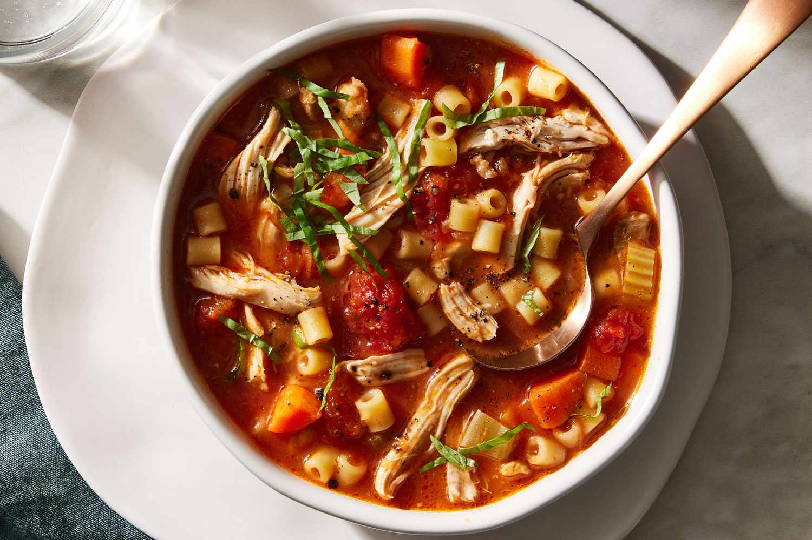

Home
Soup

Description
This is a fragrant, minestrone soup made using traditional Italian spices. The combination of tender chicken and fresh parsley, makes this a soup you'll cook for years to come.
Ingredients
- Chicken breasts
- Peeled tomato chunks
- Chicken broth
- Orecchiette
- Mixed vegetables
- Italian spices
- Parsley
Steps
- Slice the chicken breasts into even cubes.
- Add the chicken broth and bring to a boil.
- Add mixed vegetables and keep boiling for ten minutes.
- Stir in spices, adding salt and pepper to taste.
- Garnish with parsley and serve warm.